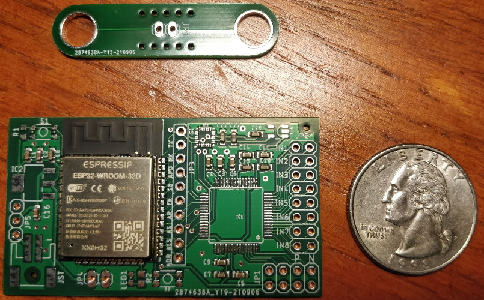

Ryan Chan
Prosthetics sEMG Signal Acquisition Board
A printed circuit board I designed during my internship at Invictus BCI that acquires surface electromyography (sEMG) signals to be used
to control prosthetics.
It can read from 8 channels and transmit the data wirelessly over bluetooth.
Pictures
